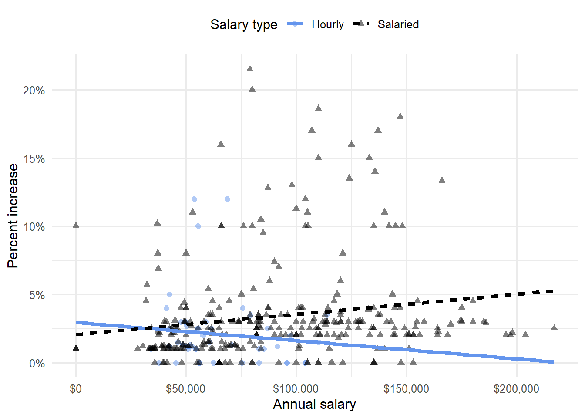
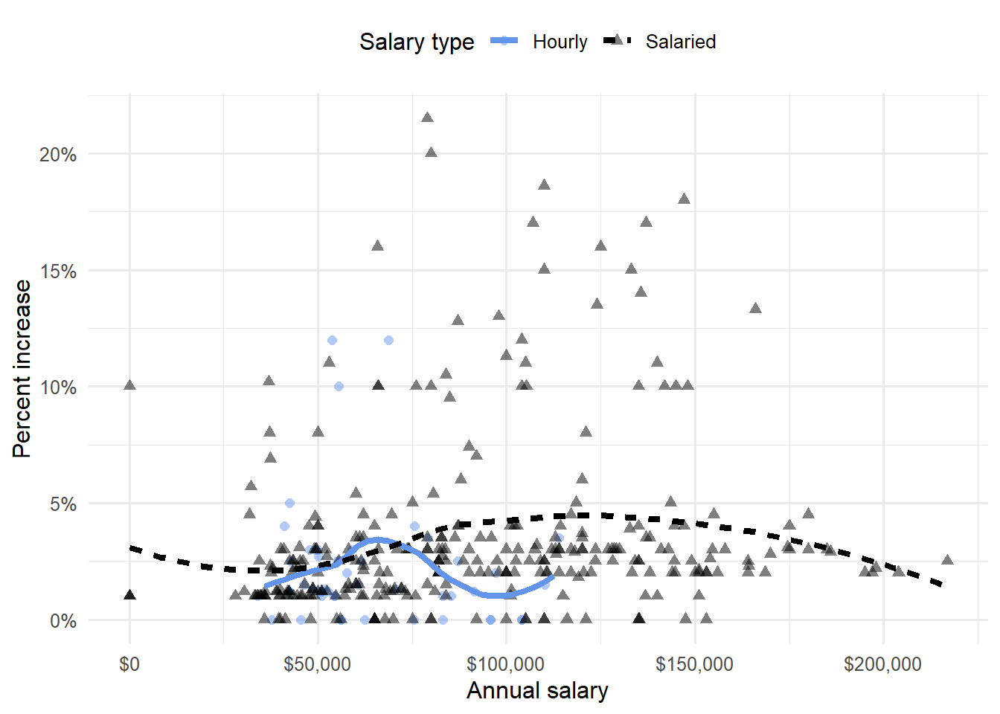
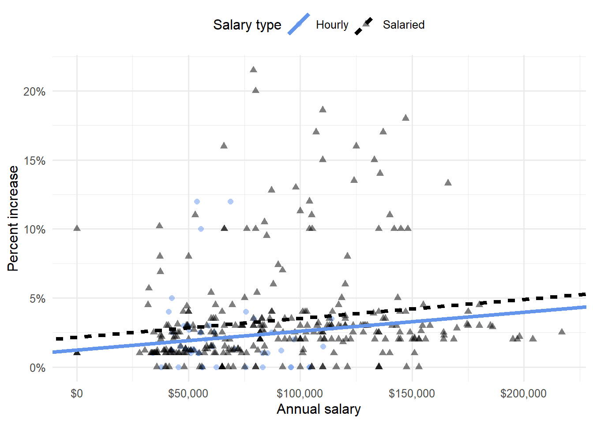
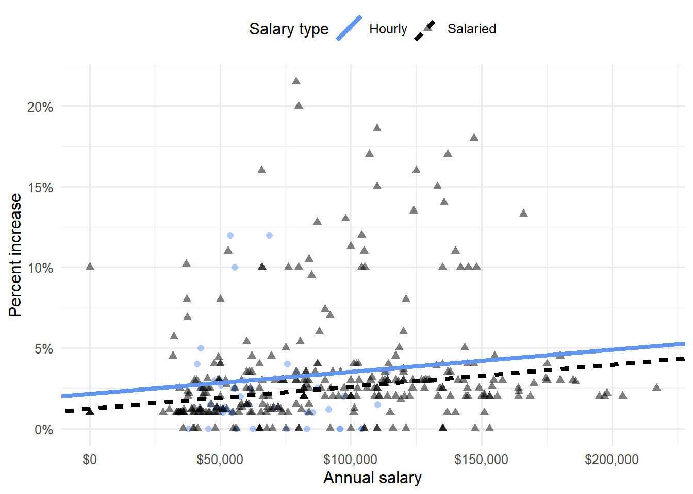
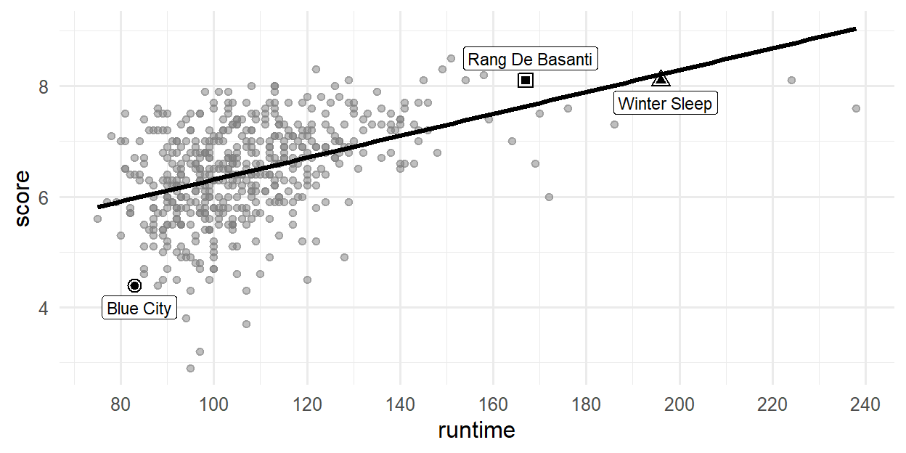
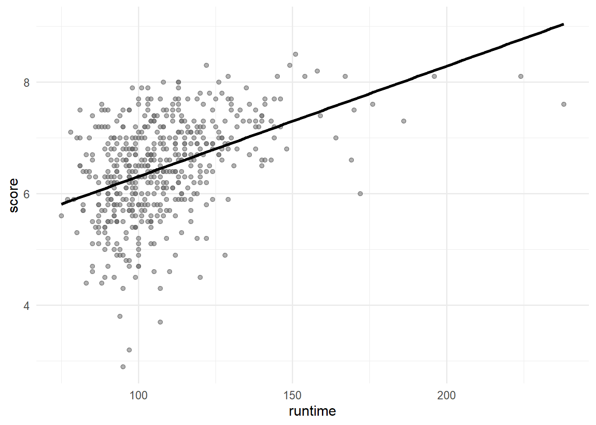
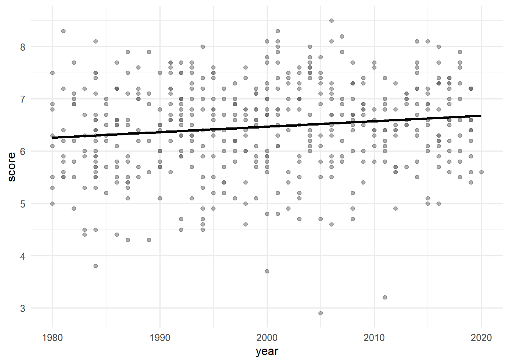
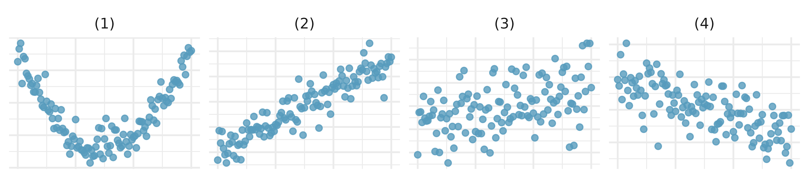
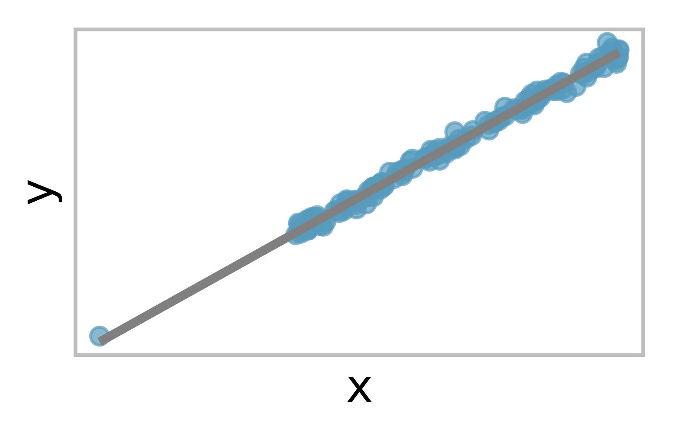
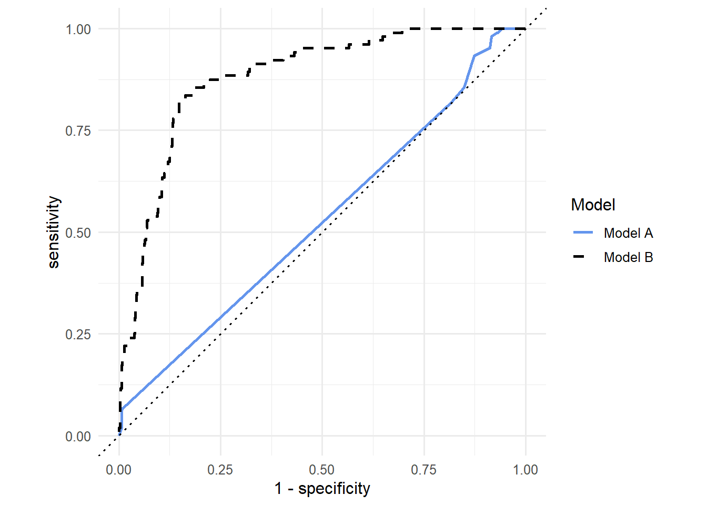

# A tibble: 409 × 4
percent_incr salary_type annual_salary performance_rating
<dbl> <chr> <dbl> <chr>
1 1 Salaried 1 High
2 1 Salaried 1 Successful
3 1 Salaried 1 High
4 1 Hourly 33987. Successful
5 NA Hourly 34798. High
6 NA Hourly 35360 <NA>
7 NA Hourly 37440 <NA>
8 0 Hourly 37814. <NA>
9 4 Hourly 41101. Top
10 1.2 Hourly 42328 <NA>
# ℹ 399 more rowsExam 2 review
Questions
Note
Suggested answers can be found here, but resist the urge to peek before you go through it yourself.
Reference materials
The following resources will be made available in the exam:
a scientific calculator that looks like this:
Formulas:
\[ \widehat{p} = \frac{e^{b_0+b_1x+\cdots +b_mx_m}}{1+e^{b_0+b_1x+\cdots +b_mx_m}} \]
\[ \log\left(\frac{\widehat{p}}{1-\widehat{p}}\right) = b_0+b_1x+\cdots+b_mx_m \] \[FNR = \dfrac{FN}{FN+TP}\] \[FPR = \dfrac{FP}{FP+TN}\] \[TPR = \dfrac{TP}{FN+TP}\] \[TNR = \dfrac{TN}{FP+TN}\]
Blizzard salaries
In 2020, employees of Blizzard Entertainment circulated a spreadsheet to anonymously share salaries and recent pay increases amidst rising tension in the video game industry over wage disparities and executive compensation. (Source: Blizzard Workers Share Salaries in Revolt Over Pay)
The name of the data frame used for this analysis is blizzard_salary and the variables are:
percent_incr: Raise given in July 2020, as percent increase with values ranging from 0 (no increase) to 21.5 (21.5% increase)salary_type: Type of salary, with levelsHourlyandSalariedannual_salary: Annual salary, in USD, with values ranging from $1 to $216,856.performance_rating: Most recent review performance rating, with levelsPoor,Successful,High, andTop. ThePoorlevel is the lowest rating and theToplevel is the highest rating.
The first ten rows of blizzard_salary are shown below:
Question 1
You fit a model for predicting raises (percent_incr) from salaries (annual_salary). We’ll call this model raise_1_fit. A tidy output of the model is shown below.
# A tibble: 2 × 5
term estimate std.error statistic p.value
<chr> <dbl> <dbl> <dbl> <dbl>
1 (Intercept) 1.87 0.432 4.33 0.0000194
2 annual_salary 0.0000155 0.00000452 3.43 0.000669 Which of the following is the best interpretation of the slope coefficient?
- For every additional $1,000 of annual salary, the model predicts the raise to be higher, on average, by 1.55%.
- For every additional $1,000 of annual salary, the raise goes up by 0.0155%.
- For every additional $1,000 of annual salary, the model predicts the raise to be higher, on average, by 0.0155%.
- For every additional $1,000 of annual salary, the model predicts the raise to be higher, on average, by 1.87%.
Question 2
You then fit a model for predicting raises (percent_incr) from salaries (annual_salary) and performance ratings (performance_rating). We’ll call this model raise_2_fit. Which of the following is definitely true based on the information you have so far?
- Intercept of
raise_2_fitis higher than intercept ofraise_1_fit. - Slope of
raise_2_fitis higher than RMSE ofraise_1_fit. - Adjusted \(R^2\) of
raise_2_fitis higher than adjusted \(R^2\) ofraise_1_fit. - \(R^2\) of
raise_2_fitis higher than \(R^2\) ofraise_1_fit.
Question 3
The tidy model output for the raise_2_fit model you fit is shown below.
# A tibble: 5 × 5
term estimate std.error statistic p.value
<chr> <dbl> <dbl> <dbl> <dbl>
1 (Intercept) 3.55 0.508 6.99 1.99e-11
2 annual_salary 0.00000989 0.00000436 2.27 2.42e- 2
3 performance_ratingPoor -4.06 1.42 -2.86 4.58e- 3
4 performance_ratingSuccessful -2.40 0.397 -6.05 4.68e- 9
5 performance_ratingTop 2.99 0.715 4.18 3.92e- 5When your teammate sees this model output, they remark
“The coefficient for
performance_ratingSuccessfulis negative. That’s weird. I guess it means that people who get successful performance ratings get lower raises.”
How would you respond to your teammate?
Question 4
Ultimately, your teammate decides they don’t like the negative slope coefficients in the model output you created (not that there’s anything wrong with negative slope coefficients!), does something else, and comes up with the following model output.
# A tibble: 5 × 5
term estimate std.error statistic p.value
<chr> <dbl> <dbl> <dbl> <dbl>
1 (Intercept) -0.511 1.47 -0.347 0.729
2 annual_salary 0.00000989 0.00000436 2.27 0.0242
3 performance_ratingSuccessful 1.66 1.42 1.17 0.242
4 performance_ratingHigh 4.06 1.42 2.86 0.00458
5 performance_ratingTop 7.05 1.53 4.60 0.00000644Unfortunately they didn’t write their code in a Quarto document, instead just wrote some code in the Console and then lost track of their work. They remember using the fct_relevel() function and doing something like the following:
blizzard_salary <- blizzard_salary |>
mutate(performance_rating = fct_relevel(performance_rating, ___))What should they put in the blanks to get the same model output as above?
- “Poor”, “Successful”, “High”, “Top”
- “Successful”, “High”, “Top”
- “Top”, “High”, “Successful”, “Poor”
- Poor, Successful, High, Top
Question 5
Suppose we fit a model to predict percent_incr from annual_salary and salary_type. A tidy output of the model is shown below.
# A tibble: 3 × 5
term estimate std.error statistic p.value
<chr> <dbl> <dbl> <dbl> <dbl>
1 (Intercept) 1.24 0.570 2.18 0.0300
2 annual_salary 0.0000137 0.00000464 2.96 0.00329
3 salary_typeSalaried 0.913 0.544 1.68 0.0938 Which of the following visualizations represents this model? Explain your reasoning.




Question 6
When building a model to predict percent_incr, what is the main reason to split this data into training and testing sets?
Movies
The data for this part comes from the Internet Movie Database (IMDB). Specifically, the data are a random sample of movies released between 1980 and 2020.
The name of the data frame used for this analysis is movies, and it contains the variables shown in Table 1.
movies
| Variable | Description |
|---|---|
name |
name of the movie |
rating |
rating of the movie (R, PG, etc.) |
genre |
main genre of the movie. |
runtime |
duration of the movie |
year |
year of release |
release_date |
release date (YYYY-MM-DD) |
release_country |
release country |
score |
IMDB user rating |
votes |
number of user votes |
director |
the director |
writer |
writer of the movie |
star |
main actor/actress |
country |
country of origin |
budget |
the budget of a movie (some movies don’t have this, so it appears as 0) |
gross |
revenue of the movie |
company |
the production company |
The first thirty rows of the movies data frame are shown in Table 2, with variable types suppressed (since we’ll ask about them later).
First 30 rows of movies, with variable types suppressed.
# A tibble: 500 × 16
name score runtime genre rating release_country release_date
1 Blue City 4.4 83 mins Action R United States 1986-05-02
2 Winter Sleep 8.1 196 Drama Not Rated Turkey 2014-06-12
3 Rang De Basan… 8.1 167 Comedy Not Rated United States 2006-01-26
4 Pokémon Detec… 6.6 104 Action PG United States 2019-05-10
5 A Bad Moms Ch… 5.6 104 Comedy R United States 2017-11-01
6 Replicas 5.5 107 Drama PG-13 United States 2019-01-11
7 Windy City 5.8 103 Drama R Uruguay 1986-01-01
8 War for the P… 7.4 140 Action PG-13 United States 2017-07-14
9 Tales from th… 6.4 98 Crime R United States 1995-05-24
10 Fire with Fire 6.5 103 Drama PG-13 United States 1986-05-09
11 Raising Helen 6 119 Comedy PG-13 United States 2004-05-28
12 Feeling Minne… 5.4 99 Comedy R United States 1996-09-13
13 The Babe 5.9 115 Biography PG United States 1992-04-17
14 The Real Blon… 6 105 Comedy R United States 1998-02-27
15 To vlemma tou… 7.6 176 Drama Not Rated United States 1997-11-01
16 Going the Dis… 6.3 102 Comedy R United States 2010-09-03
17 Jung on zo 6.8 103 Action R Hong Kong 1993-06-24
18 Rita, Sue and… 6.5 93 Comedy R United Kingdom 1987-05-29
19 Phone Booth 7 81 Crime R United States 2003-04-04
20 Happy Death D… 6.6 96 Comedy PG-13 United States 2017-10-13
21 Barely Legal 4.7 90 Comedy R Thailand 2006-05-25
22 Three Kings 7.1 114 Action R United States 1999-10-01
23 Menace II Soc… 7.5 97 Crime R United States 1993-05-26
24 Four Rooms 6.8 98 Comedy R United States 1995-12-25
25 Quartet 6.8 98 Comedy PG-13 United States 2013-03-01
26 Tape 7.2 86 Drama R Denmark 2002-07-12
27 Marked for De… 6 93 Action R United States 1990-10-05
28 Congo 5.2 109 Action PG-13 United States 1995-06-09
29 Stop-Loss 6.4 112 Drama R United States 2008-03-28
30 Con Air 6.9 115 Action R United States 1997-06-06
# ℹ 470 more rows
# ℹ 9 more variables: budget, gross, votes, year,
# director, writer, star, company, countryScore vs. runtime
In this part, we fit a model predicting score from runtime and name it score_runtime_fit.
score_runtime_fit <- linear_reg() |>
fit(score ~ runtime, data = movies)Figure 2 visualizes the relationship between score and runtime as well as the linear model for predicting score from runtime. The first three movies in Table 2 are labeled in the visualization as well. Answer all questions in this part based on Figure 2.

score vs. runtime for movies.
Question 7
Which of the following is the best guess for the correlation between runtime and score?
- \(r = -0.83\)
- \(r = -0.43\)
- \(r=-0.13\)
- \(r=0.03\)
- \(r=0.43\)
- \(r=0.93\)
- \(r=1.83\)
Question 8
Based on this model, order the three labeled movies in Figure 2 in decreasing order of the magnitude (absolute value) of their residuals.
Winter Sleep > Rang De Basanti > Blue City
Winter Sleep > Blue City > Rang De Basanti
Rang De Basanti > Winter Sleep > Blue City
Blue City > Winter Sleep > Rang De Basanti
Blue City > Rang De Basanti > Winter Sleep
Question 9
The R-squared for the model visualized in Figure 2 is 31%. Which of the following is the best interpretation of this value?
31% of the variability in movie runtimes is explained by their scores.
31% of the variability in movie scores is explained by their runtimes.
The model accurately predicts scores of 31% of the movies in this sample.
The model accurately predicts scores of 31% of all movies.
The correlation between scores and runtimes of movies is 0.31.
Score vs. runtime or year
The visualizations below show the relationship between score and runtime as well as score and year, respectively. Additionally, the lines of best fit are overlaid on the visualizations.


The correlation coefficients of these relationships are calculated below, though some of the code and the output are missing. Answer all questions in this part based on the code and output shown below.
movies |>
__blank_1__(
r_score_runtime = cor(runtime, score),
r_score_year = cor(year, score)
)# A tibble: 1 × 2
r_score_runtime r_score_year
<dbl> <dbl>
1 0.434 __blank_2__ Question 10
Which of the following goes in __blank_1__?
summarizemutategroup_byarrangefilter
Question 11
What can we say about the value that goes in __blank_2__?
NAA value between 0 and 0.434.
A value between 0.434 and 1.
A value between 0 and -0.434.
A value between -1 and -0.434.
Score vs. runtime and rating
In this part, we fit a model predicting score from runtime and rating (categorized as G, PG, PG-13, R, NC-17, and Not Rated), and name it score_runtime_rating_fit.
The model output for score_runtime_rating_fit is shown in Table 3. Answer all questions in this part based on Table 3.
score_runtime_rating_fit.
| term | estimate | std.error | statistic | p.value |
|---|---|---|---|---|
| (Intercept) | 4.525 | 0.332 | 13.647 | 0.000 |
| runtime | 0.021 | 0.002 | 10.702 | 0.000 |
| ratingPG | -0.189 | 0.295 | -0.642 | 0.521 |
| ratingPG-13 | -0.452 | 0.292 | -1.547 | 0.123 |
| ratingR | -0.257 | 0.285 | -0.901 | 0.368 |
| ratingNC-17 | -0.355 | 0.486 | -0.730 | 0.466 |
| ratingNot Rated | -0.282 | 0.328 | -0.860 | 0.390 |
Question 12
Which of the following is TRUE about the intercept of score_runtime_rating_fit? Select all that are true.
Keeping runtime constant, G-rated movies are predicted to score, on average, 4.525 points.
Keeping runtime constant, movies without a rating are predicted to score, on average, 4.525 points.
Movies without a rating that are 0 minutes in length are predicted to score, on average, 4.525 points.
All else held constant, movies that are 0 minutes in length are predicted to score, on average, 4.525 points.
G-rated movies that are 0 minutes in length are predicted to score, on average, 4.525 points.
Question 13
Which of the following is the best interpretation of the slope of runtime in score_runtime_rating_fit?
All else held constant, as runtime increases by 1 minute, the score of the movie increases by 0.021 points.
For G-rated movies, all else held constant, as runtime increases by 1 minute, the score of the movie increases by 0.021 points.
All else held constant, for each additional minute of runtime, movie scores will be higher by 0.021 points on average.
G-rated movies that are 0 minutes in length are predicted to score 0.021 points on average.
For each higher level of rating, the movie scores go up by 0.021 points on average.
Question 14
Fill in the blank:
R-squared of
score_runtime_rating_fit(the model predictingscorefromruntimeandrating) _________ the R-squared of the modelscore_runtime_fit(for predictingscorefromruntimealone).
is less than
is equal to
is greater than
cannot be compared (based on the information provided) to
is both greater than and less than
Question 15
The model score_runtime_rating_fit (the model predicting score from runtime and rating) can be visualized as parallel lines for each level of rating. Which of the following is the equation of the line for R-rated movies?
\(\widehat{score} = (4.525 - 0.257) + 0.021 \times runtime\)
\(score = (4.525 - 0.257) + 0.021 \times runtime\)
\(\widehat{score} = 4.525 + (0.021 - 0.257) \times runtime\)
\(score = 4.525 + (0.021 - 0.257) \times runtime\)
\(\widehat{score} = (4.525 + 0.021) - 0.257 \times runtime\)
Question 16
Answer the following based on Table 3.
Interpret the coefficient for
ratingRin the context of the data.The R-squared of
score_runtime_fit(predictingscorefromruntimealone) is 0.314 and the R-squared ofscore_runtime_rating_fit(predictingscorefromruntimeandrating) is 0.2. The adjusted R-squared values of these models are 0.174 and 0.191, respectively. Your friend says, “R-squared went up when we addedrating, soratingmust be a useful predictor of score.” Which statistic should be used to compare these two models? Based on that statistic, which model would you choose, and why?
Miscellaneous
Question 17
Define the term “parsimonious model”.
Question 18
In order to predict the amount a taxi rider tipped (in dollars) based on the day of the week of the taxi ride, the time of day of the ride, and the ride distance, you could build this type of model:
simple linear regression
multiple linear regression
logistic regression
ROC curve
Question 19
The odds of the Roadrunners winning tomorrow’s basketball game are 4 to 1. What is the probability the Roadrunners will win the game?
Question 20
Match each correlation to the corresponding scatterplot.

\(r = -0.7\)
\(r = 0.45\)
\(r = 0.06\)
\(r = 0.92\)
Question 21
The following scatterplot has an outlier in the lower left corner. Which of the following are true about the outlier? Select all that apply.

The point is outlying in the x direction.
The point is outlying in the y direction.
The point is influential.
Spam filter
The data from this part come from incoming emails in David Diez’s (one of the authors of the OpenIntro textbooks) Gmail account for the first three months of 2012. All personally identifiable information has been removed.
The name of the data frame used for this analysis is email. The variables we’ll use in this analysis are
spam: 1 if the email is spam, 0 otherwisedollar: number of times a dollar sign or the word “dollar” appeared in the email
A logistic regression model was fit to predict whether an email is spam or not, based on the number of times a dollar sign or the word “dollar” appeared in the email.
The model output is shown below:
# A tibble: 2 × 5
term estimate std.error statistic p.value
<chr> <dbl> <dbl> <dbl> <dbl>
1 (Intercept) -2.21 0.0569 -38.9 0
2 dollar -0.0564 0.0195 -2.89 0.00380Question 22
Partial code for producing the model (and its output) is given below. Which of the following goes in the blank on line 2?
dollar ~ spamspam ~ dollarlog(dollar) ~ spamspam ~ log(dollar)
Question 23
Based on the model output above for spam_dollar_fit, find the predicted probability that an email containing 5 dollar signs is spam. Round to 3 decimal places.
Question 24
What is the meaning of a false negative in this example?
- A spam email was classified as spam.
- A spam email was classified as not spam.
- A not-spam email was classied as spam.
- A not-spam email was classified as not spam.
Question 25
Which of the following is the best interpretation of the coefficient of dollar in spam_dollar_fit?
- For each additional dollar sign or word “dollar”, the probability of spam decreases by 0.0564.
- For each additional dollar sign or word “dollar”, the log-odds of spam decrease by 0.0564.
- For each additional dollar sign or word “dollar”, the odds of spam decrease by 0.0564.
- For each additional dollar sign or word “dollar”, the probability of spam decreases by 5.64%.
Question 26
The model spam_dollar_fit was used to classify a new email as spam or not. The augmented dataframe showing predicted probabilities is below:
# A tibble: 1 × 2
.pred_0 .pred_1
<dbl> <dbl>
1 0.43 0.57Using a threshold of 0.6, how would this email be classified?
- Spam
- Not spam
- Partially spam
- Cannot be determined
Question 27
A new model spam_fit2 was fit (using additional predictors) and was used to classify each email in the email dataset as spam or not spam. The predictions were checked and tallied. The code and its output are shown below:
augment(spam_fit2, new_data = email) |>
count(spam, .pred_class)# A tibble: 4 × 3
spam .pred_class n
<fct> <fct> <int>
1 0 0 3547
2 0 1 7
3 1 0 353
4 1 1 14Calculate the true positive rate of the model, rounded to 3 decimal places.
Question 28
Suppose you increased the decision threshold. Which of the following are true? Select all that apply.
- The true positive rate would increase or stay the same.
- The true positive rate would decrease or stay the same.
- The area under the ROC curve would increase.
- The model may predict “spam” less often.
Question 29
The data is split into training and testing sets, and two new models for predicting spam are created.
set.seed(1234)
email_split <- initial_split(email, prop = 0.7)
email_training <- training(email_split)
email_testing <- testing(email_split)The first model is fit predicting spam from dollar, winner (indicating whether “winner” appeared in the email: "no" or "yes"), and urgent_subj (whether the word “urgent” is in the subject of the email: 0 or 1). We will call this model Model A (email_fit_A).
email_fit_A <- logistic_reg() |>
fit(spam ~ dollar + winner + urgent_subj, data = email_training)Another model is fit predicting spam from all variables in the dataset except time (the date and time the email was sent). We will call this model Model B (email_fit_B).
email_fit_B <- logistic_reg() |>
fit(
spam ~ to_multiple + from + cc + sent_email + image + attach + dollar + winner + inherit + viagra + password + num_char + line_breaks + format + re_subj + exclaim_subj + urgent_subj + exclaim_mess + number,
data = email_training
)Each model is used to make predictions for the testing dataset.
email_aug_A <- augment(email_fit_A, new_data = email_testing)
email_aug_B <- augment(email_fit_B, new_data = email_testing)Shown below are the ROC curves for Model A and Model B.

What does the diagonal dotted line in the ROC curve plot represent?
Based on the ROC curves, which model appears to have better classification ability? Justify your answer.
Inference and modeling medley
Question 33
A survey based on a random sample of 2,045 American teenagers found that a 95% confidence interval for the mean number of texts sent per month was (1450, 1550). A valid interpretation of this interval is
- 95% of all teens who text send between 1450 and 1550 text messages per month.
- If a new survey with the same sample size were to be taken, there is a 95% chance that the mean number of texts in the sample would be between 1450 and 1550.
- We are 95% confident that the mean number of texts per month of all American teens is between 1450 and 1550.
- We are 95% confident that the mean number of texts per month for the teens in the sample is between 1450 and 1550.
Question 34
Which of the following is true about bootstrapping?
- Bootstrap samples are drawn from the original sample with replacement.
- Bootstrap samples are the same size (n) as our original sample.
- The bootstrap uses the original sample to approximate the entire population.
- All of the above.
Question 35
If the p-value is 0.06 and our discernibility level is \(\alpha=0.01\), what do we do?
- Accept the null.
- Fail to reject the null.
- Reject the null.
Question 36
If the p-value is 0.0342 and our discernibility level is \(\alpha=0.05\), what do we do?
- Reject the null.
- Accept the null.
- Fail to reject the null.
Question 37
In logistic regression, the response variable y is what type?
- Numerical continuous.
- Numerical discrete.
- Categorical with two levels.
- Categorical with three levels.
Question 38
A logistic regression model misclassifies an email from your grandmother as spam. That’s an example of a…
- False positive.
- False negative.
Question 39
How much of a distribution is to the right of its 0.975 quantile?
- 0.975%
- 2.5%
- 50%
- 97.5%
Question 40
True or false. And, if false, explain your reasoning.
Increasing the number of bootstrap samples will decrease the width of the confidence interval.